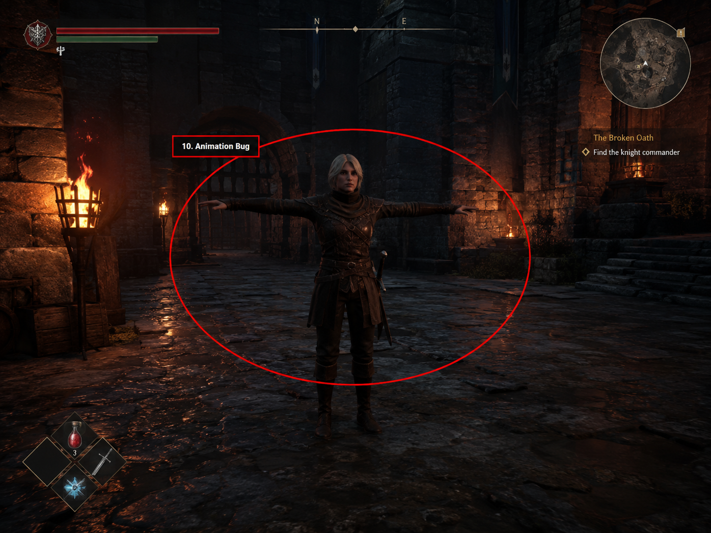
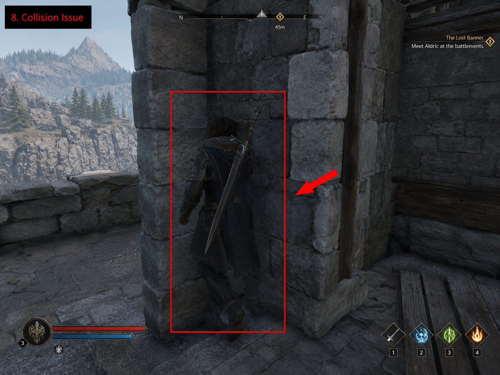
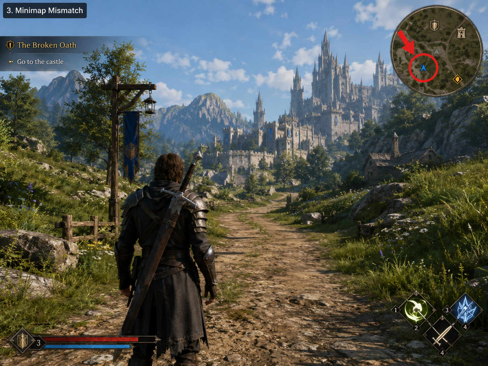
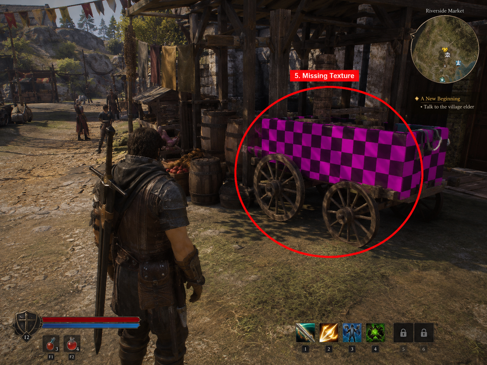
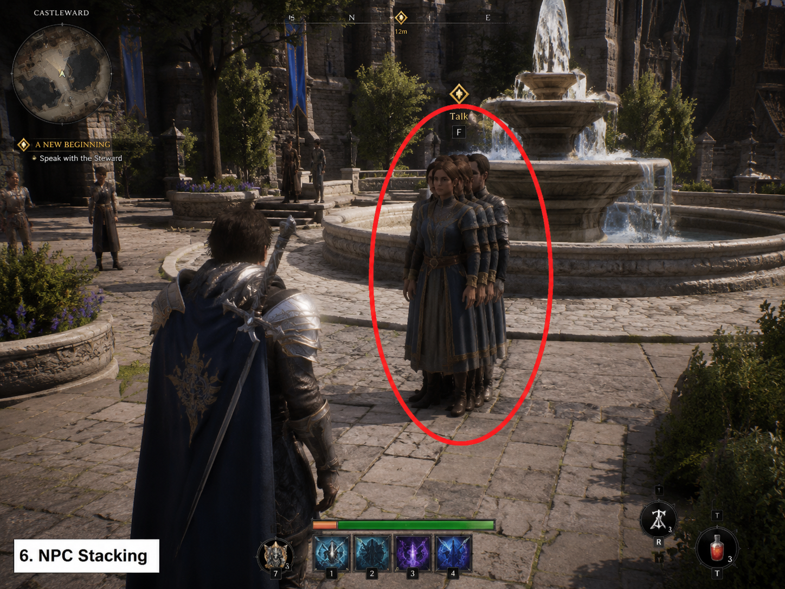
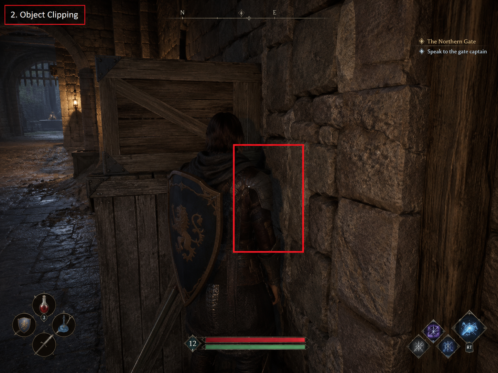
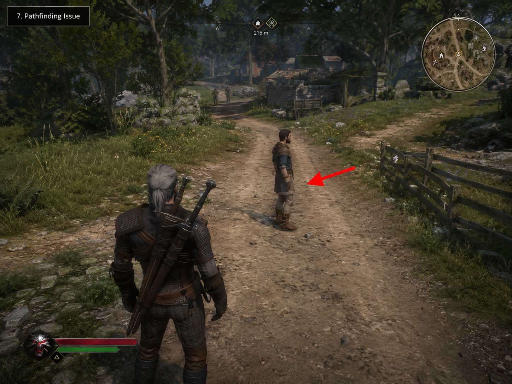
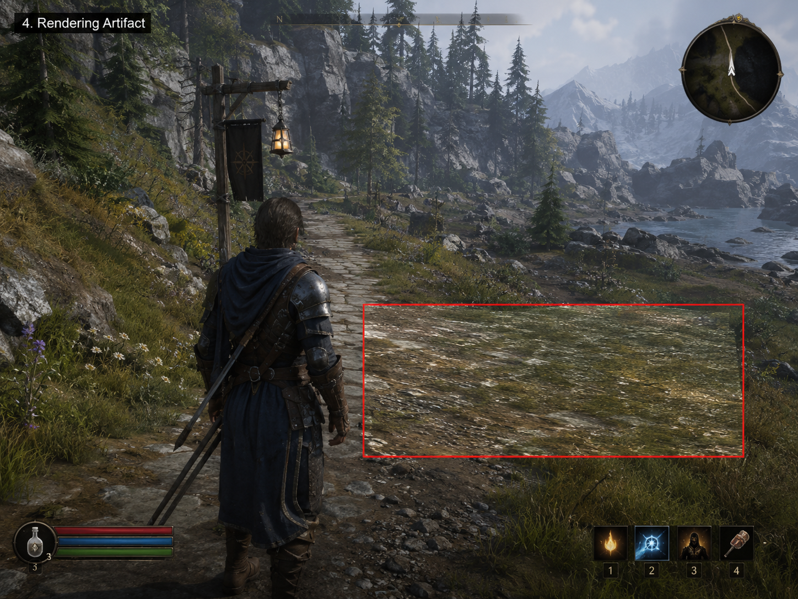
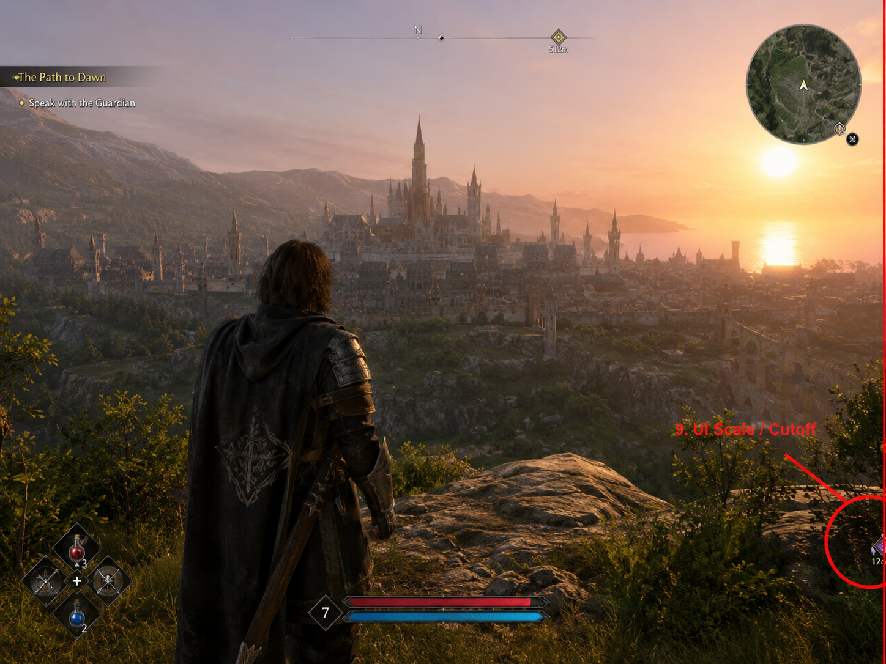
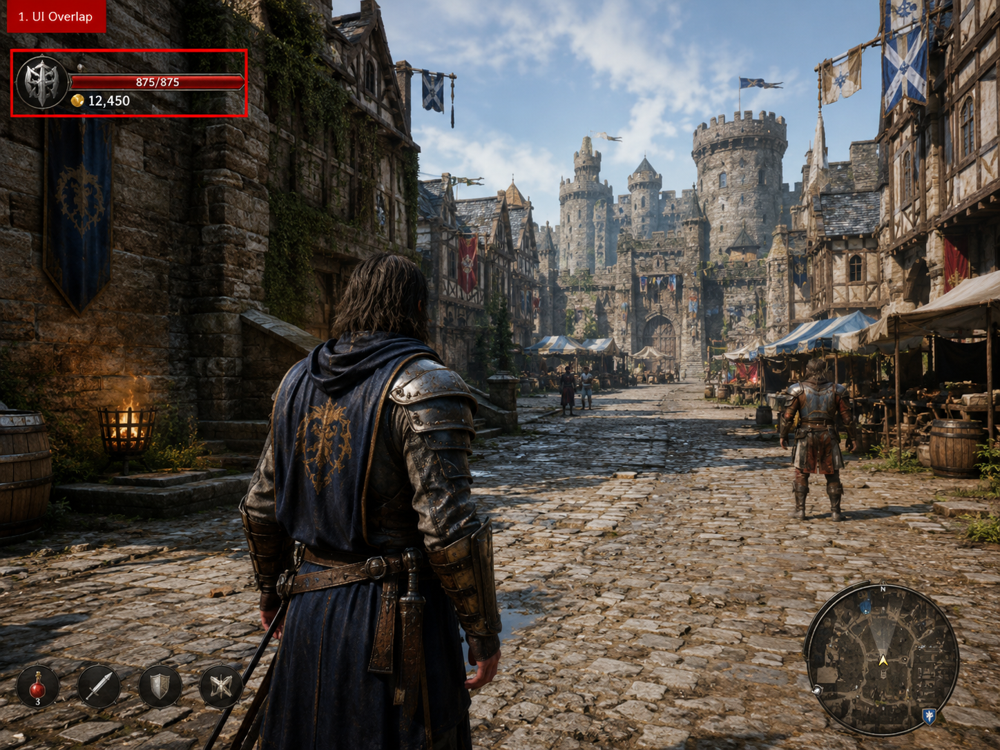

UI 오류
Minor
신뢰도 0.85
Health bar overlaps with the minimap.
Unity Cause: Improper UI layout settings or anchors. Fix: Adjust the UI anchors and layout to prevent overlap.AI가 감지한 이슈를 스크린샷별로 분류하고, bbox overlay로 시각화합니다.
test_animation_bug_10.png

Health bar overlaps with the minimap.
Unity Cause: Improper UI layout settings or anchors. Fix: Adjust the UI anchors and layout to prevent overlap.Minimap does not accurately reflect the player's position.
Unity Cause: Incorrect minimap scaling or player position tracking. Fix: Check minimap scaling settings and player coordinate mapping.Flickering textures on the ground.
Unity Cause: Z-fighting or incorrect material settings. Fix: Adjust the materials or increase the distance between overlapping objects.Two NPCs are overlapping in the scene.
Unity Cause: Improper spawn logic or collision settings. Fix: Implement better spawn logic to avoid overlap.test_collision_issue_08.png

Health bar overlaps with minimap in the top corner.
Unity Cause: Incorrect positioning of UI elements. Fix: Adjust the anchor points and layout settings for the UI components.Character model partially intersects with the environment geometry.
Unity Cause: Improper collider settings or incorrect model import settings. Fix: Review and adjust colliders or modify the model's mesh to prevent clipping.Player's location on the minimap does not align with the actual position in the game world.
Unity Cause: Incorrect mapping of player coordinates to minimap coordinates. Fix: Check the minimap script for accurate position translation.test_minimap_mismatch_03.png

The health bar overlaps with the minimap.
Unity Cause: Improper UI layout settings or anchors. Fix: Adjust the RectTransform settings of the UI elements to prevent overlap.Character model is partially clipping through the environment.
Unity Cause: Incorrect collider settings or scaling issues. Fix: Review and adjust collider sizes and check for appropriate layer settings.test_missing_texture_05.png

The health bar overlaps with the minimap.
Unity Cause: Incorrect canvas sorting order or anchors. Fix: Adjust the canvas hierarchy or reposition UI elements.Minimap does not show the correct player position.
Unity Cause: Minimap camera not aligned with player position. Fix: Reconfigure the minimap camera settings to track the player accurately.Flickering textures on the terrain.
Unity Cause: Z-fighting between overlapping textures. Fix: Adjust the material properties or increase the distance between overlapping objects.Player character passes through a wall.
Unity Cause: Incorrect collider setup or missing colliders. Fix: Verify that all colliders are correctly placed and configured.test_npc_stacking_06.png

The health bar overlaps with the minimap in the top right corner.
Unity Cause: Improper UI layout settings or anchor points. Fix: Adjust the positioning of the UI elements in the Canvas.Character model partially clips through the wall.
Unity Cause: Incorrect collider settings or mesh rendering issues. Fix: Check the collider bounds and adjust the character's position or scale.Strange flickering on the terrain in the background.
Unity Cause: Z-fighting due to overlapping meshes or incorrect camera settings. Fix: Adjust the mesh depth or modify camera clipping planes.Player can walk through certain objects that should be solid.
Unity Cause: Colliders not set up correctly on solid objects. Fix: Review and fix the collider configurations for affected objects.test_object_clipping_02.png

The health bar overlaps with the minimap.
Unity Cause: Incorrect UI canvas settings or layout issues. Fix: Adjust the positioning of the UI elements in the Canvas.Character model partially clipping through the wall.
Unity Cause: Improper collider setup or wrong layer configurations. Fix: Review and adjust colliders for the character and the wall.Minimap does not accurately reflect player position.
Unity Cause: Incorrect player position tracking on the minimap. Fix: Verify minimap camera settings and player position updates.test_pathfinding_issue_07.png

Health bar overlaps with inventory UI.
Unity Cause: Incorrect UI layout settings or anchors. Fix: Adjust the positioning and anchors of the UI elements in the Canvas.Minimap does not reflect the player's current position accurately.
Unity Cause: Incorrect position syncing between player and minimap. Fix: Check the minimap camera settings and ensure correct player position updates.Flickering textures on the terrain.
Unity Cause: Shader issues or texture mipmap settings. Fix: Review the shaders used and adjust mipmap settings for the terrain textures.Two NPCs are overlapping in the center of the screen.
Unity Cause: Incorrect spawn logic or lack of collision avoidance. Fix: Implement spacing logic for NPC spawns to prevent overlap.test_rendering_artifact_04.png

The health bar overlaps with the minimap.
Unity Cause: Incorrect UI canvas sorting or positioning. Fix: Adjust the UI elements' RectTransform properties to ensure proper layering.Character model partially clips through the wall.
Unity Cause: Incorrect collider setup or scale issues. Fix: Review collider boundaries and adjust the character's position or collider size.test_ui_cutoff_09.png

The health bar overlaps with the minimap, making it hard to read both elements.
Unity Cause: Incorrect UI layout settings or canvas scaling issues. Fix: Adjust the layout of the UI elements to ensure they do not overlap and are clearly visible.The character model is partially clipping through a wall.
Unity Cause: Improper collider settings or incorrect positioning of the character model. Fix: Check and adjust the collider settings and ensure the character's position respects the environment boundaries.test_ui_overlap_01.png

The health bar overlaps with the inventory icon.
Unity Cause: Canvas scaling issues or incorrect anchor settings. Fix: Adjust the canvas settings and reposition UI elements to prevent overlap.Character's arm clips through the wall when standing close.
Unity Cause: Improper collider setup or incorrect layer settings. Fix: Review the collider dimensions and adjust them to prevent clipping.Flickering textures on the ground in certain lighting conditions.
Unity Cause: Z-fighting between two overlapping meshes. Fix: Adjust the position or scale of overlapping meshes to eliminate Z-fighting.Source: test_animation_bug_10.png · Confidence: 0.85
Health bar overlaps with the minimap.
Source: test_animation_bug_10.png · Confidence: 0.9
Minimap does not accurately reflect the player's position.
Source: test_animation_bug_10.png · Confidence: 0.75
Flickering textures on the ground.
Source: test_animation_bug_10.png · Confidence: 0.8
Two NPCs are overlapping in the scene.
Source: test_collision_issue_08.png · Confidence: 0.85
Health bar overlaps with minimap in the top corner.
Source: test_collision_issue_08.png · Confidence: 0.9
Character model partially intersects with the environment geometry.
Source: test_collision_issue_08.png · Confidence: 0.7
Player's location on the minimap does not align with the actual position in the game world.
Source: test_minimap_mismatch_03.png · Confidence: 0.85
The health bar overlaps with the minimap.
Source: test_minimap_mismatch_03.png · Confidence: 0.9
Character model is partially clipping through the environment.
Source: test_missing_texture_05.png · Confidence: 0.85
The health bar overlaps with the minimap.
Source: test_missing_texture_05.png · Confidence: 0.9
Minimap does not show the correct player position.
Source: test_missing_texture_05.png · Confidence: 0.75
Flickering textures on the terrain.
Source: test_missing_texture_05.png · Confidence: 0.8
Player character passes through a wall.
Source: test_npc_stacking_06.png · Confidence: 0.85
The health bar overlaps with the minimap in the top right corner.
Source: test_npc_stacking_06.png · Confidence: 0.9
Character model partially clips through the wall.
Source: test_npc_stacking_06.png · Confidence: 0.75
Strange flickering on the terrain in the background.
Source: test_npc_stacking_06.png · Confidence: 0.8
Player can walk through certain objects that should be solid.
Source: test_object_clipping_02.png · Confidence: 0.85
The health bar overlaps with the minimap.
Source: test_object_clipping_02.png · Confidence: 0.9
Character model partially clipping through the wall.
Source: test_object_clipping_02.png · Confidence: 0.75
Minimap does not accurately reflect player position.
Source: test_pathfinding_issue_07.png · Confidence: 0.8
Health bar overlaps with inventory UI.
Source: test_pathfinding_issue_07.png · Confidence: 0.9
Minimap does not reflect the player's current position accurately.
Source: test_pathfinding_issue_07.png · Confidence: 0.75
Flickering textures on the terrain.
Source: test_pathfinding_issue_07.png · Confidence: 0.65
Two NPCs are overlapping in the center of the screen.
Source: test_rendering_artifact_04.png · Confidence: 0.85
The health bar overlaps with the minimap.
Source: test_rendering_artifact_04.png · Confidence: 0.9
Character model partially clips through the wall.
Source: test_ui_cutoff_09.png · Confidence: 0.85
The health bar overlaps with the minimap, making it hard to read both elements.
Source: test_ui_cutoff_09.png · Confidence: 0.9
The character model is partially clipping through a wall.
Source: test_ui_overlap_01.png · Confidence: 0.85
The health bar overlaps with the inventory icon.
Source: test_ui_overlap_01.png · Confidence: 0.9
Character's arm clips through the wall when standing close.
Source: test_ui_overlap_01.png · Confidence: 0.75
Flickering textures on the ground in certain lighting conditions.